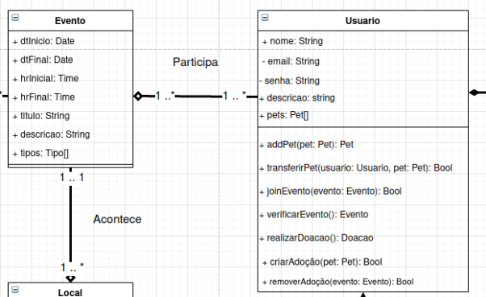
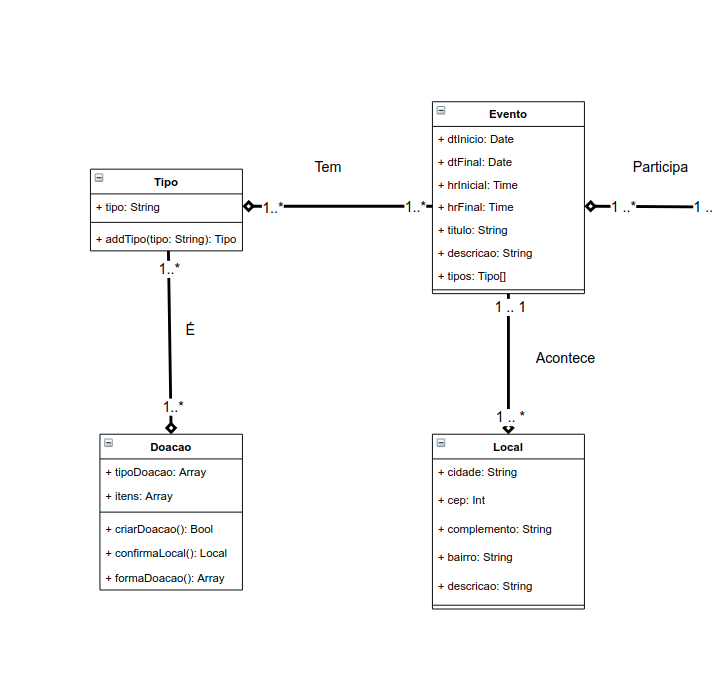
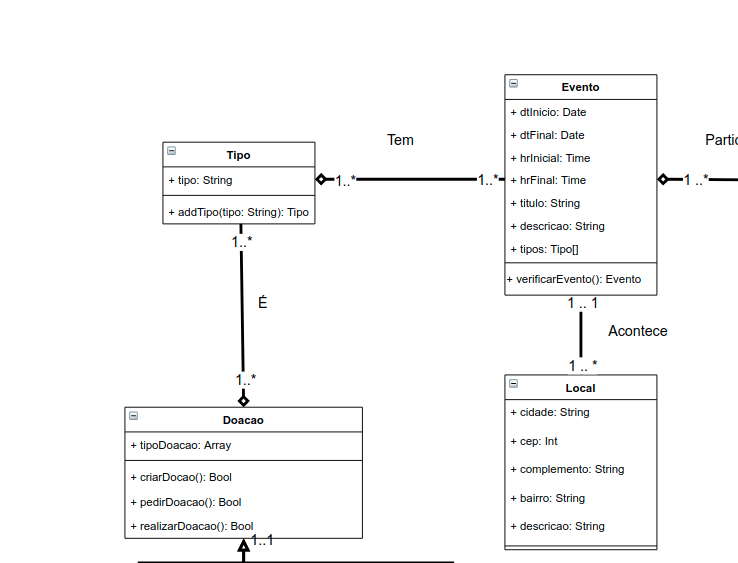

Escolha de GRASPs
Padrões Escolhidos
- Especialista
- Controlador
- Polimorfismo
- Indireção
GRASP Especialista
Para a aplicação do padrão especialista, foram revistos os métodos do diagrama de classe e a seguinte alteração foi feita: Realocação do método verificarEvento().
O método verificar Evento depende das informações presentes no evento, assim o padrão especialista recomenda que sua implementação seja feita na classe Evento, com isso seguimos as recomendações do padrão de baixo acoplamento também.
- Antes

- Depois

GRASP Controlador
A princípio para a utilização desse padrão não foi vista necessidade de alterar artefatos anteriores.
Conforme é verificado no Diagrama de Pacotes, com o uso do pacote "controllers" tem-se a implementação desse padrão. Este se dá pelo uso desta estrutura de pastas composta por cada uma das classes que delegarão todos os eventos relacionados a cada uma delas. Por exemplo haverá uma controller para a classe Usuario, outra para a classe Doacao e assim por diante. Essa implementação é adequada pois melhora a manutenabilidade do produto.

GRASP Polimorfismo
Para a utilização desse padrão, foram realizadas mudanças no Diagrama de Classes, que se basearam na aplicação de Herança entre as classes filhas (Doacao_Monetaria e Doacao_Modal) com a classe abstrata pai (Doacao).
-
Vantagem
- A implementação desse padrão aumenta a manutenabilidade do produto.
-
Antes

- Depois

GRAPS Indireção
A princípio para a utilização desse padrão não foi vista necessidade de alterar artefatos anteriores.
Esse padrão é encontrado em nosso projeto no Diagrama de Classes, mais explicitamente na classe "Tipo", que tem a responsabilidade de ser um objeto intermediário entre as classes "Evento" e "Doação", tornando-os indiretamente acomplados.

Referências bibliográficas
Análise sobre a ISO 9126. Acessado em 16 de setembro de 2021;
GROFFE, Renato. Desenvolvimento com qualidade com GRASP. DevMedia, 2013. Disponível em Acesse aqui. Acesso em: 11 de Setembro de 2021.
HENRIQUE, João. POO: O que é programação Orientada à Objetos?. Alura. 2019. Disponível em: Acesse aqui . Acesso em: 11 de Setembro de 2021.
BASSETTO, Nelson. – Responsibility Driven Design e GRASP – General Responsibility Assignment Software Principles. Arquitetura de Software e Afins. 10 de dezembro de 2011. Disponível em Acesse aqui Acesso em: 11 de setembro de 2021.
LARMAN, Craig. Applying UML and Patterns: An Introduction to Object-Oriented Analysis and Design and the Unified Process (PDF) (2nd ed.). Prentice Hall. ISBN 0-13-092569-1. Acesso em: 11 de setembro de 2021.
SERRANO, Milene. Arquitetura e Desenho de Software: AULA - GRASP_A - COMPLEMENTAR. 66 slides. Disponível em: Acesse aqui. Acesso em: 12 de Setembto de 2021.
LIMA, Edirlei. Análise e Projeto Orientados por Objetos: Aula 03 – Padrões de Projeto GRASP. 52 slides. Disponível em: Acesse aqui. Acesso em: 12/09/2021.
Histórico de versão
| Data | Versão | Descrição | Autor(es) |
|---|---|---|---|
| 14/09/2021 | 0.1 | Criação do documento e adição do tópico Especialista | Antonio Ruan |
| 14/09/2021 | 0.2 | Adição do tópico Controlador | Vinícius Souza |
| 14/09/2021 | 0.3 | Adição do tópico Polimorfismo | Victor Samuel |
| 15/09/2021 | 0.4 | Revisão e atualização do documento | Gabriela Pivetta, Arthur Sena |
| 16/09/2021 | 0.5 | Revisão do documento, correção das rotas das imagens, correções ortográficas e ajuste de texto | Edvan Gomes, Sara Campos, Júlio Schneider |
| 20/09/2021 | 0.6 | Adição do padrão de Indireção | Antônio Ruan, Victor Samuel e Vinícius Vieira |
| 20/09/2021 | 0.7 | Revisão e atualização de rotas de imagens | Antônio Ruan, Thiago Luiz, Victor Samuel e Vinícius Vieira |